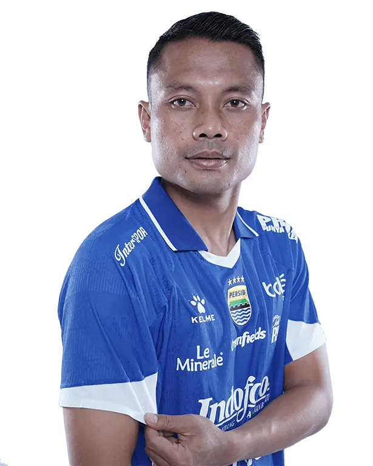

 Persib Bandung
Persib Bandung
Dedi Kusnandar
- Nama Lengkap: Dedi Kusnandar
- Tanggal Lahir: 23 April 1991 (Indonesia)
- Posisi: Gelandang
- Nomor: 14
- Bergabung Klub: Persib Bandung (2024–sekarang)
- Status: Pemain Persib Bandung & Timnas Indonesia
Karier Sepak Bola
- Persema Malang (2009–2010)
- Arema FC (2010–2013)
- Persib Bandung (2014–2017)
- Bali United (2018–2023)
- Persib Bandung (2024–sekarang)
- Timnas Indonesia (2012–sekarang)
Statistik
193
Penampilan Klub
-
Gol Dicetak
5
Assists
3
Caps Timnas
80%
Akurasi Operan
Riwayat Cedera
- 2019 – Cedera lutut (absen ±2 bulan)
Prestasi
- Gelandang berpengalaman Persib Bandung
- Berpengalaman di Timnas Indonesia
- Kontribusi penting di lini tengah klub
Bio Singkat
Dedi Kusnandar adalah gelandang senior asal Indonesia yang kembali memperkuat Persib Bandung pada 2024. Ia dikenal memiliki visi permainan yang baik, kemampuan distribusi bola, dan tendangan jarak jauh. Dengan pengalaman bermain di berbagai klub Liga 1 dan Timnas Indonesia, Dedi menjadi pengatur permainan lini tengah yang vital bagi Persib Bandung.